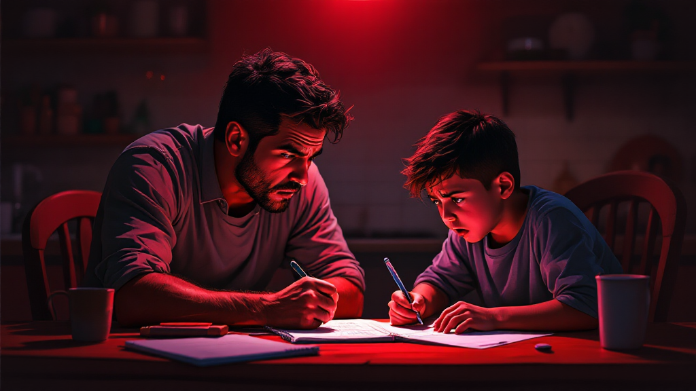
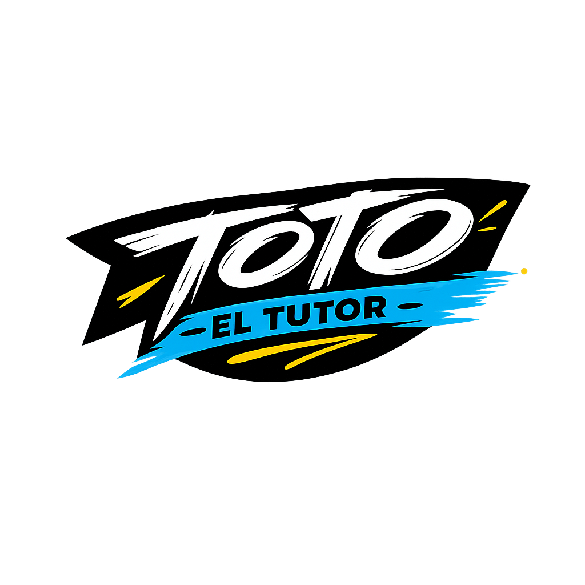
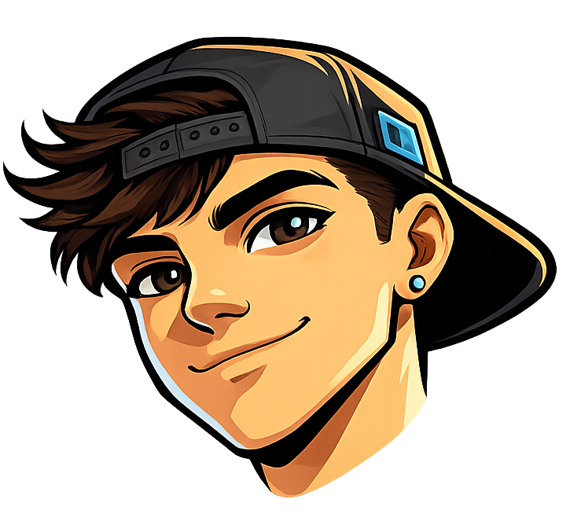
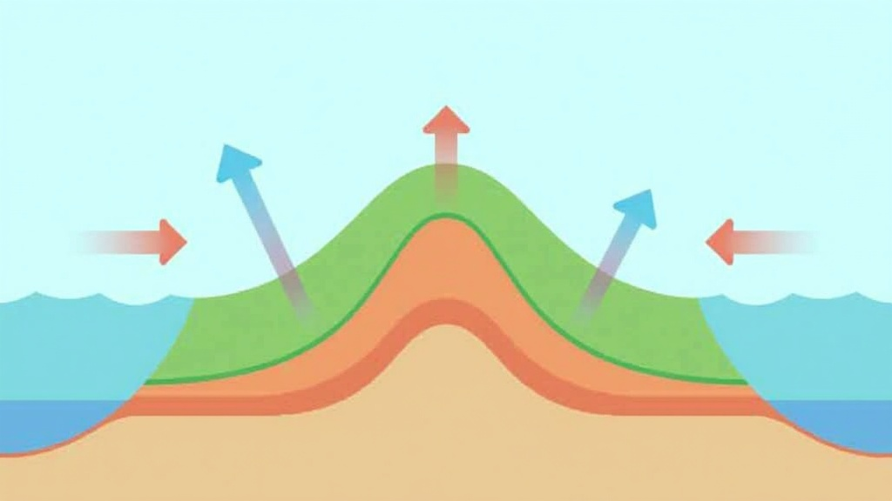
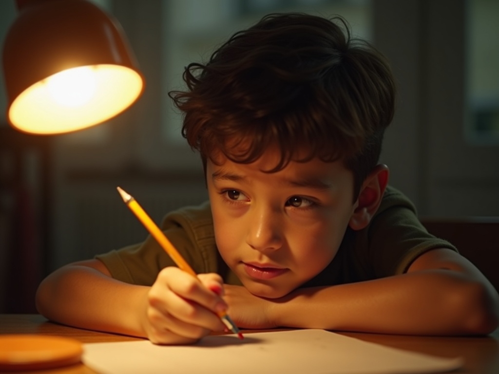

Probalo gratis →
Probalo gratis →
Probalo gratis →
Probalo gratis →
Tu hijo te mira con el cuaderno abierto.
Y los dos saben cómo termina esto.

Cada respuesta regalada es un músculo mental que tu hijo no ejercitó. Se acumula. Y cuando llega el examen, no hay ChatGPT que lo salve.
Concepto clave
El deterioro progresivo de habilidades cognitivas — atención, memoria de trabajo, pensamiento crítico — que ocurre cuando una herramienta realiza el trabajo mental por el estudiante.
Como un músculo que deja de ejercitarse: se atrofia. Y la brecha entre quien piensa y quien copia se agranda cada día.
Conocé a

El primer tutor socrático de IA para chicas y chicos en nivel primario
Paso a paso
Tu hijo le saca una foto al ejercicio. Toto lee el problema al instante. Así de simple, sin fricción.
«Fijate, ¿qué pasa si dividís esa torta en 4 partes iguales?» Guía el pensamiento sin hacer trampa.
Nunca lo deja solo. Si se frustra, Toto baja el nivel y le ofrece una pista. Pero la respuesta siempre la encuentra él.
Le pide a tu hijo que te pregunte un dato o completen algo juntos. Preserva el vínculo. Y después te envía el reporte de la sesión.
Demo en vivo


La experiencia del alumno
Cuando encuentra la respuesta por sí mismo, sabe que puede. No depende de que otro le diga qué hacer.
Toto celebra el proceso, no solo el resultado. El chico siente que equivocarse está bien si está pensando.
La tarea deja de ser territorio de pelea. Vos podés ser el padre que apoya, no el que examina.
Resultados reales
Una nueva habilidad para niños nativos de la IA
Se pronuncia “eiaishéi” — como los DJ’s, pero con la AI
Alguien que doma la IA, no al revés. Que la usa como herramienta, no como muleta.

Fundamento
Cómo se forman las conexiones neuronales en la infancia. Qué tipo de estímulos fortalecen vs debilitan el pensamiento autónomo.
El método de enseñanza basado en preguntas que lleva 2400 años formando pensadores críticos. Adaptado para estudiantes de primaria.
El vínculo familiar como base del aprendizaje. La tarea como oportunidad de conexión, no de conflicto.
Toto está listo para acompañar a tu hijo.
Y a darte tranquilidad a vos.